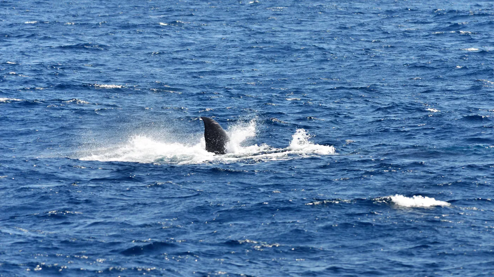
Nov–Aprcoast
Whale watching, Mirissa
Optional early-morning boat trips from Mirissa. The company’s guidance: typically best November to April on the south coast; sea conditions decide.
Featured on:Ultimate AdventureExplorer
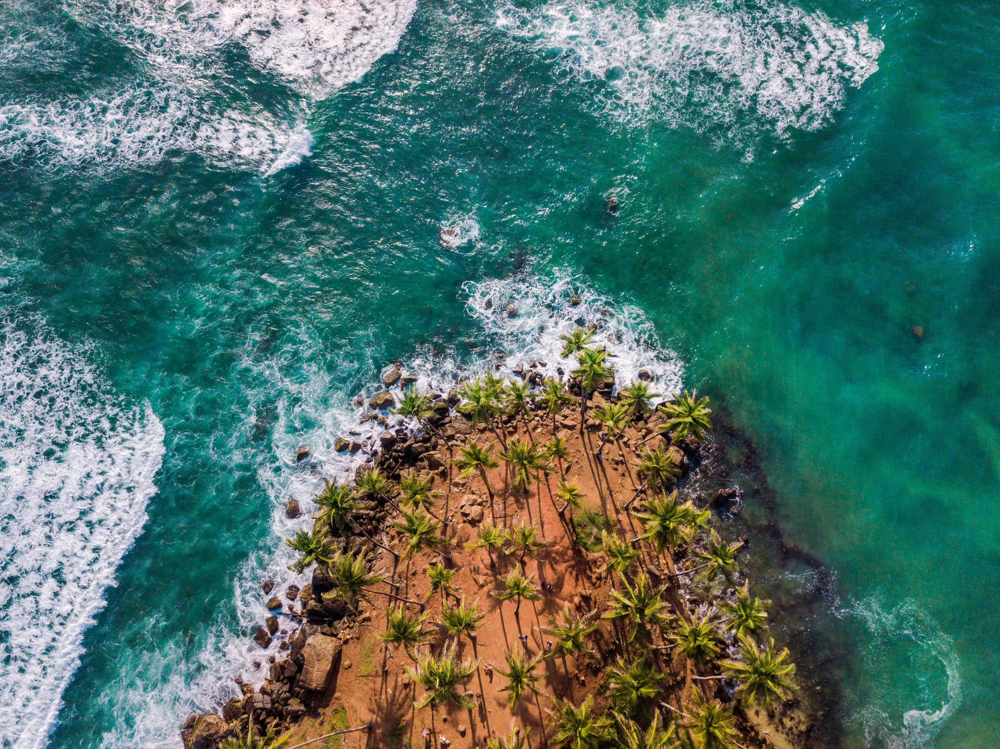
Experiences
Whale watching off Mirissa, sunrise on Sigiriya, the Nine Arch Bridge, tea country, leopard country and more — with honest notes on seasons.

Nov–AprOptional early-morning boat trips from Mirissa. The company’s guidance: typically best November to April on the south coast; sea conditions decide.
Featured on:Ultimate AdventureExplorer
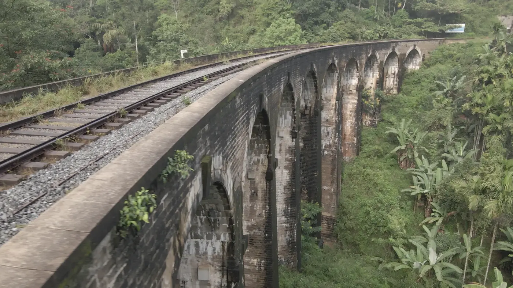
Year-roundThe colonial-era railway bridge in Ella’s jungle and tea hills — watch a train cross, depending on the schedule.
Featured on:Ultimate AdventureBack to Sri LankaExplorerEssentials
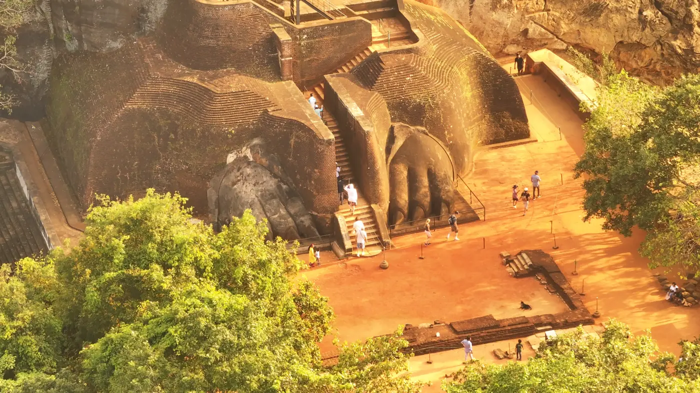
Year-roundUp past the Lion’s Paw to the summit palace ruins. Allow about 2–3 hours; good shoes and water. Early starts beat the heat.
Featured on:Back to Sri LankaExplorerEssentials
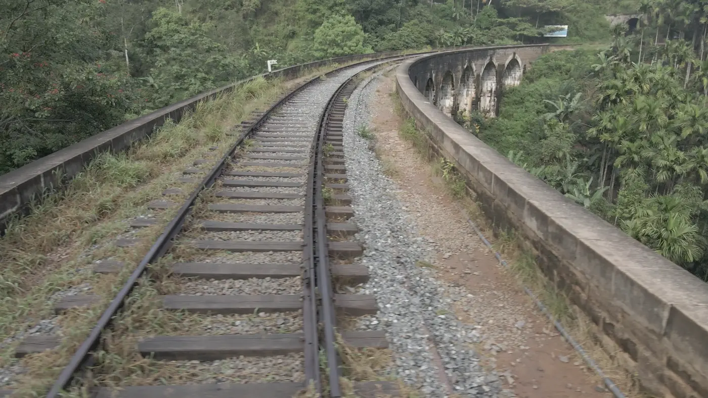
Year-roundNanu Oya ↔ Ella through tea estates, tunnels and valleys. Tickets are included on our journeys; seat class depends on availability.
Featured on:Ultimate AdventureBack to Sri LankaExplorerEssentials
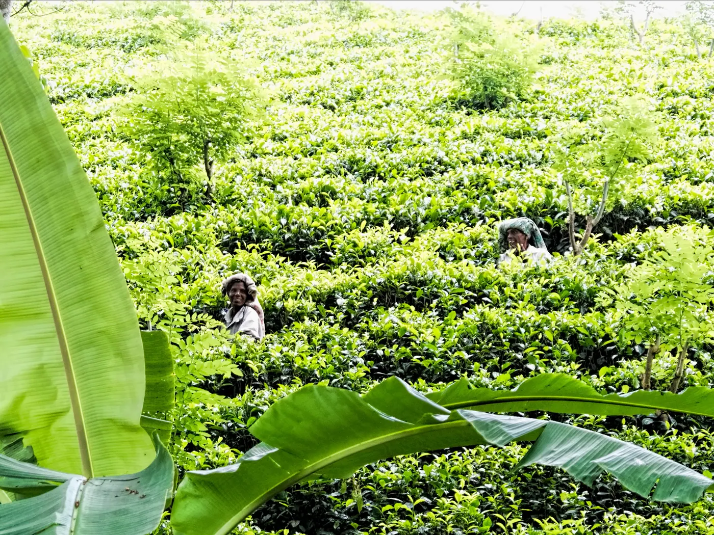
Year-roundWalk the estates and visit a factory to see Ceylon Tea plucked, processed and graded — then taste it.
Featured on:Back to Sri LankaExplorerEssentials
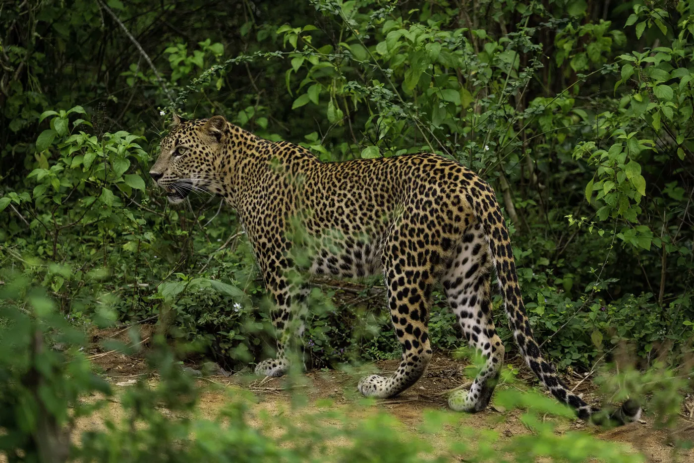
Ask usYala jeep safaris run early morning or afternoon. Elephants, deer, crocodiles and birdlife; leopard sightings are possible, never guaranteed.
Featured on:Back to Sri LankaExplorerEssentials
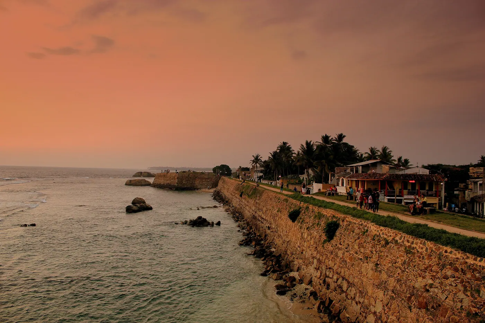
Best Dec–MarWalk or cycle the ramparts past the lighthouse and Dutch-era streets as the sun drops into the Indian Ocean.
Featured on:Ultimate AdventureBack to Sri LankaExplorer
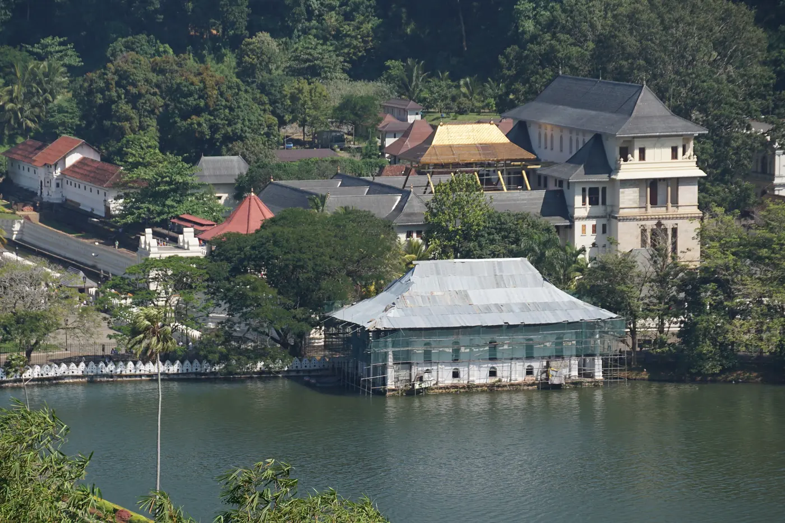
Year-roundThe sacred Temple of the Tooth Relic in Kandy. Cover shoulders and knees, remove shoes and hats, and respect photography rules.
Featured on:Back to Sri LankaExplorerEssentials
Beginner lessons with local instructors on the south coast around Ahangama and Mirissa.
Featured on:Ultimate AdventureBack to Sri Lanka
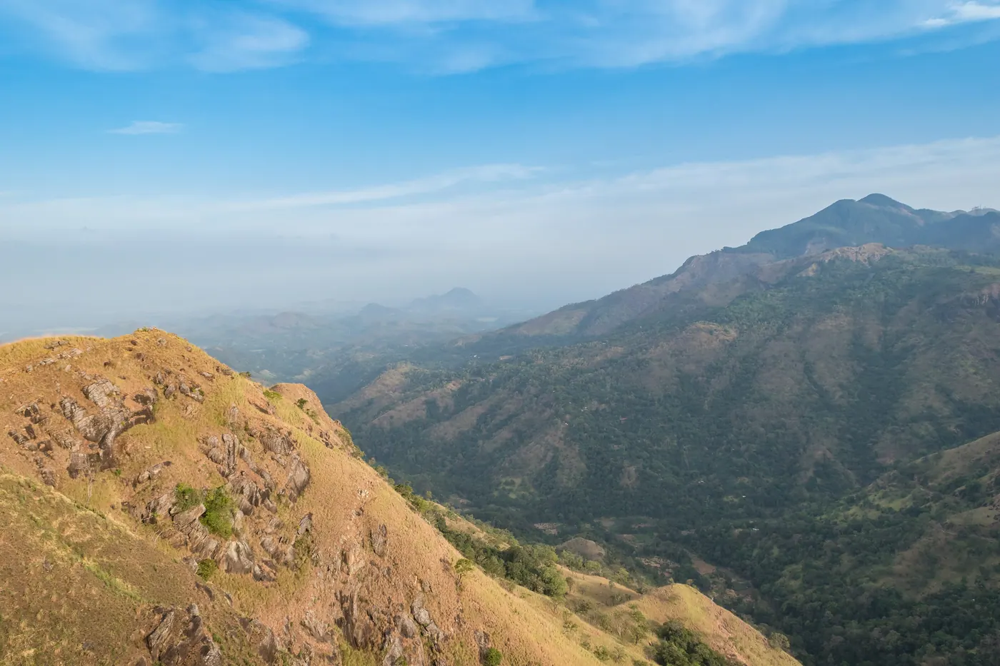
Year-roundLittle Adam’s Peak at sunrise, Pidurangala Rock, the Knuckles Five Peaks and Sinharaja rainforest trails.
Featured on:Ultimate AdventureExplorerEssentials
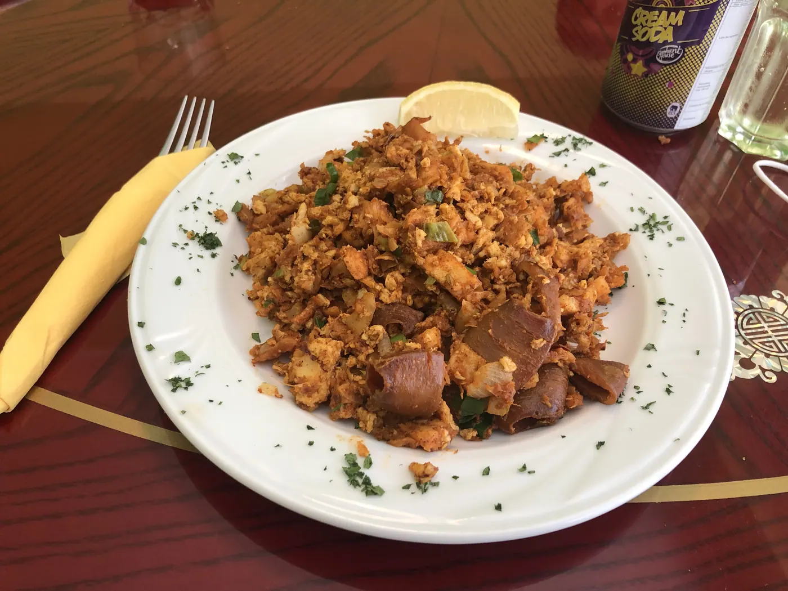
Year-roundVillage cooking demonstrations in Sigiriya, spice gardens in Matale, seafood breakfasts and Jaffna cooking classes.
Featured on:Back to Sri LankaExplorerEssentials
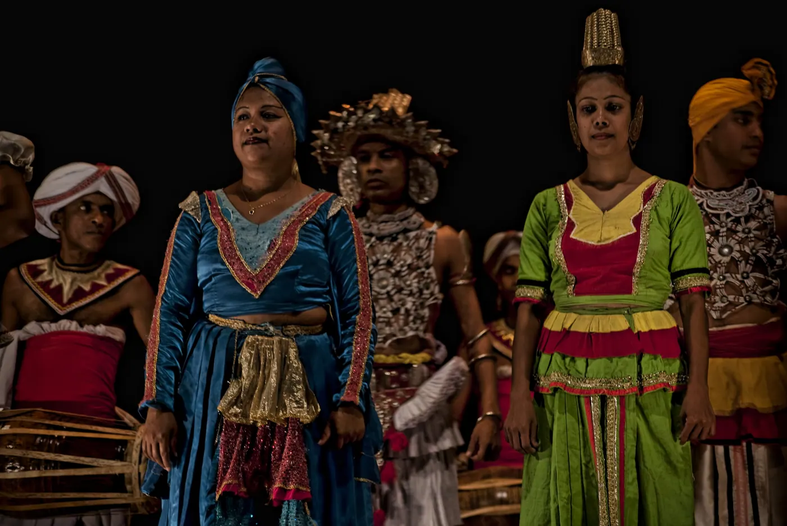
Year-roundKandyan dance, village homes, bullock carts and catamarans, palmyrah toddy and traditional pottery.
Featured on:Back to Sri LankaExplorer
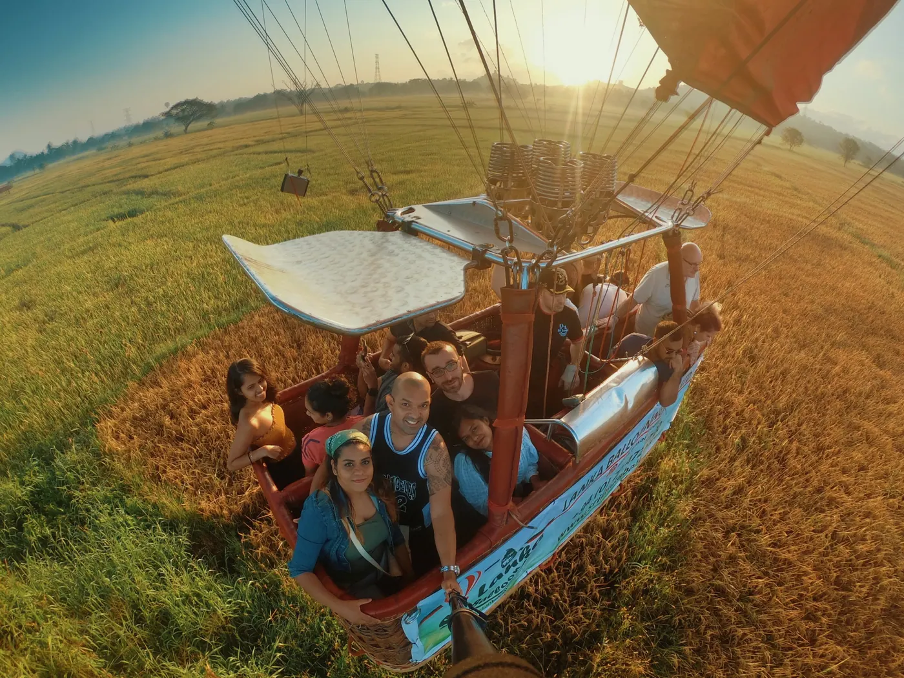
SeasonalA sunrise flight over the Cultural Triangle can be requested as an add-on. It is weather-dependent and not part of any listed journey — ask us for availability.
Add-on on request
Experience prices aren’t published here. Some are included in our journeys, others are optional add-ons — ask us for a quote. Wildlife sightings and sea conditions are never guaranteed.
Tailor-made, from first message to farewell